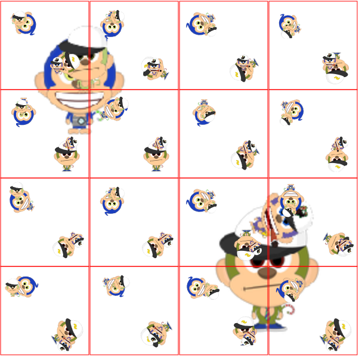
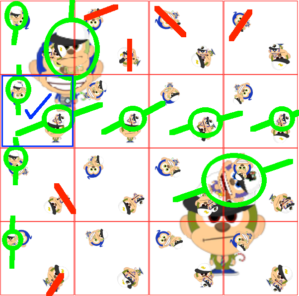

Match Small Monkeys
Match the small monkey in the large backbround image with the small monkey in a foreground image
Both the background and the foreground images have large decoy monkeys, ignore them and ignore their rotation.

Focus on the smaller two monkeys in the big background image

Match the smaller monkeys, using their rotation.
Match Smaller monkeys, which are identical except for rotation.

Green lines and circles show matching foreground monkeys with matching rotation.
Red lines show the rotation of the foreground monkeys that do not match the rotation of the background monkeys.
The blue check box shows the match, where the rotation of the two smaller monkeys in the small image align with the two smaller monkeys in the big
image.